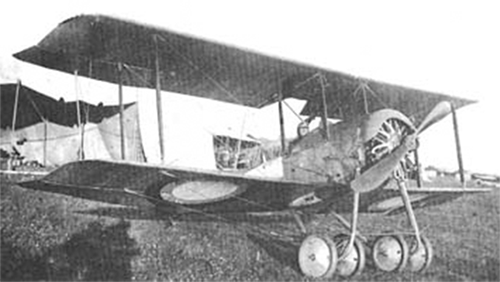

АНТ-5

- Разработчик: Сухой
- Страна: СССР
- Первый полет: 1927
- Тип: Истребитель
РБВЗ-С-16 (также известный как «Сикорский С-16» или «Sikorsky S-16») — это российский одномоторный истребитель сопровождения,
разработанный конструкторским бюро завода Руссо-Балт под руководством Игоря Ивановича Сикорского в 1914 году. Он был предназначен
для прикрытия тяжёлых бомбардировщиков (типа «Илья Муромец»).
Проект С-16 был создан на основе английского самолёта Т. Сопвича «Таблоид», который прославился своими скоростными
характеристиками. Военные ряда стран заинтересовались такими самолётами и использовали их в качестве «кавалерийских» —
маленьких скоростных самолётиков, которые должны были внезапно появляться в районе расположения противника, проводить
наблюдения и быстро доставлять собранные данные командованию.
С-16 имел общую схему «чистого» биплана, основные параметры аппарата и компоновку с двумя сиденьями пилотов,
расположенными в тесной кабинке. Самолёт был оснащён синхронизатором для стрельбы через диск винта, разработанным
лейтенантом Г. И. Лавровым.
Вооружение С-16 состояло из пулемёта «Виккерс», установленного с левой стороны от сидения пилота поверх капота.
Жёлоб для пулемётной ленты проходил сбоку снаружи фюзеляжа, а барабан с лентой стоял у лётчика в ногах.
| Летно технические характеристики | |
|---|---|
| Модификация | С-16сер |
| Размах крыла, м | 8.80 |
| Длина, м | 7.00 |
| Высота, м | 2.78 |
| Площадь крыла, м2 | 25.36 |
| Масса, кг | |
| - пустого самолета | 420 |
| - нормальная взлетная | 690 |
| -пустого самолета | 420 |
| Тип двигателя | 1 ПД Gnome |
| Мощность, л.с. | 1 х 80 |
| Максимальная скорость , км/ч | 125 |
| Практическая дальность, км | |
| Максимальная скороподъемность, м/мин | 125 |
| Практический потолок, м | 3500 |
| Экипаж, чел | 1-2 |
| Вооружение: | один 7.7-мм пулемет Виккерс |